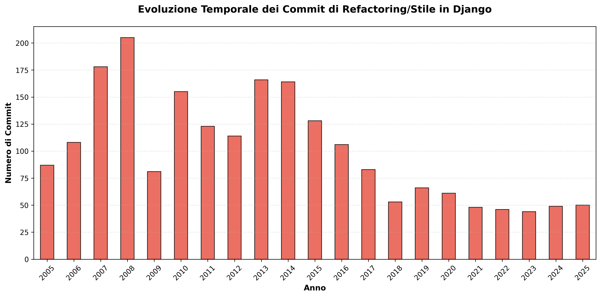

üéØ Domanda di Ricerca
Quanti commit hanno migliorato lo stile del codice o hanno effettuato operazioni di refactoring?
üìä Risultati Principali
33,567
Commit Totali Analizzati
2,115
Commit Refactoring/Stile
6.30%
Percentuale Refactoring
üí° Insight Chiave
- ✅ Circa 1 commit su 16 è dedicato al refactoring o allo stile
- ✅ Django dimostra un forte impegno per la qualità del codice
- ✅ Il refactoring è una pratica costante, non sporadica
- ✅ Solo il 15.2% degli autori contribuisce al refactoring
- ✅ I messaggi di refactoring sono più concisi (-12.5 caratteri in media)
üë• Top 10 Contributori al Refactoring
| Posizione | Autore | Commit Refactoring |
|---|---|---|
| ü•á 1 | Adrian Holovaty | 263 |
| ü•à 2 | Tim Graham | 198 |
| ü•â 3 | Russell Keith-Magee | 150 |
| 4 | Malcolm Tredinnick | 141 |
| 5 | Mariusz Felisiak | 75 |
| 6 | Aymeric Augustin | 66 |
| 7 | Gary Wilson Jr | 62 |
| 8 | Alex Gaynor | 56 |
| 9 | Jannis Leidel | 48 |
| 10 | James Bennett | 43 |
üìà Visualizzazioni
Distribuzione Commit

Analisi Temporale
Top Autori

Frequenza Parole Chiave
üî§ Parole Chiave Più Frequenti
| Parola Chiave | Occorrenze | Descrizione |
|---|---|---|
| typo | 1,326 | Correzione errori di battitura |
| formatting | 196 | Miglioramenti formattazione |
| style | 173 | Miglioramenti stile codice |
| cleanup | 94 | Pulizia codice |
| whitespace | 71 | Correzioni spazi bianchi |
| cosmetic | 50 | Modifiche estetiche |
| pep8 | 40 | Conformità PEP 8 |
üõ†Ô∏è Metodologia
- Estrazione dati: Utilizzo di
git logper estrarre tutti i commit - Preprocessing: Caricamento e pulizia dei dati con pandas
- Classificazione: Pattern matching con regex su 20+ parole chiave
- Analisi: Calcolo di statistiche aggregate e comparative
- Visualizzazione: Generazione di grafici professionali con matplotlib
- Validazione: Verifica manuale di campioni rappresentativi
üéì Conclusioni
Il 6.30% dei commit di Django (2,115 su 33,567) sono dedicati al refactoring o al miglioramento dello stile del codice.
Questo dimostra che Django mantiene un focus costante sulla qualità del codice, con il refactoring integrato come pratica standard nel processo di sviluppo. Questo approccio contribuisce alla sostenibilità e longevità del progetto.
üíª Tecnologie Utilizzate
Python 3.13
Linguaggio principale
pandas 2.x
Analisi dati
matplotlib 3.x
Visualizzazione
Git
Estrazione dati